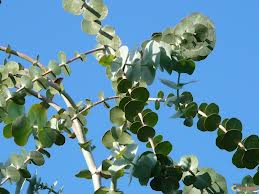

Eucalyptus

Eucalyptus (Eucalyptus de la famille des Myrtacées)
Attention : hautement toxique par ingestion pour le Korat !
Partie toxique pour les chats en général et le Korat en particulier :
Toute la plante.
Symptômes du processus pathologique :
Vomissements, diarrhées, tachycardie, coma, mort.
Origine de la toxicité (principe actif) :
Glucoside cyanogénique, etheroxyde terpénique soit eucalyptol ou cinéol, tanins.